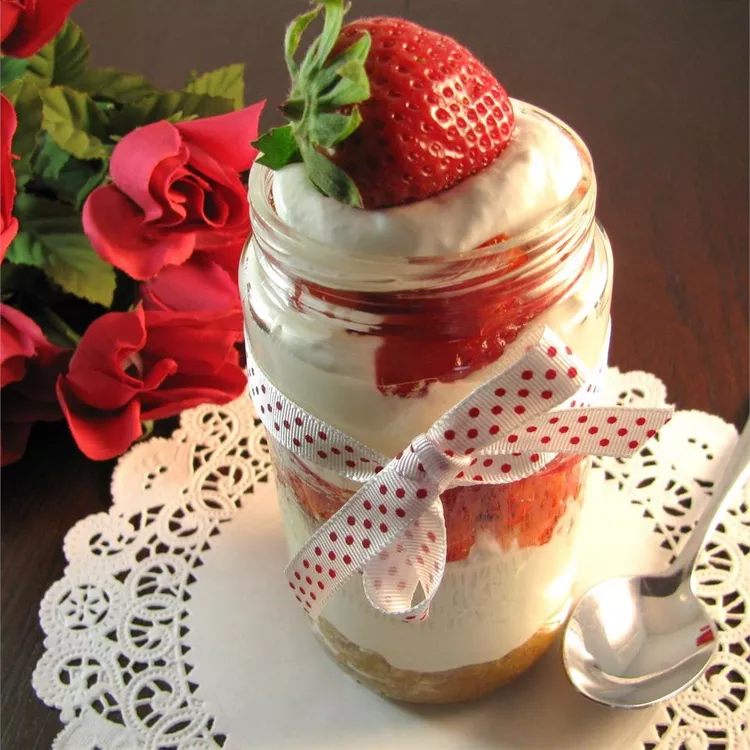

cheesecake recipe

Strawberry cheesecake in a jar
Ingredients
Crust:
- 1 1/2 cups graham cracker crumbs
- 1/2 cup butter, melted
- 1/4 cup white sugar
- 4 half pint canning jars with lids and rings
Cheesecake:
- 1 (8 ounce) package cream cheese, softened
- 1 (8 ounce) container frozen whipped topping, thawed
- 2/3 cup white sugar
- 1 teaspoon vanilla extract
- 4 fresh strawberries, sliced
Steps
- Prepare crust: Mix graham cracker crumbs, melted butter, and 1/4 cup sugar together in a bowl. Press 1/4 of mixture into the bottom of each jar.
- Prepare cheesecake: Beat cream cheese and whipped topping together with an electric mixer in a bowl until well blended. Beat 2/3 cup sugar and vanilla extract into cream cheese mixture until smooth and fluffy.
- Spoon 1/4 of cream cheese mixture onto graham cracker crust in each jar. Top each cheesecake with sliced strawberries. Refrigerate cheesecakes until serving time.